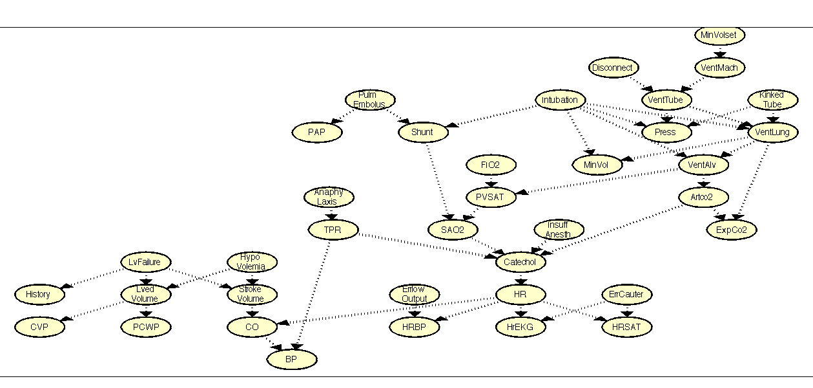

Contents
function visualizeAlarmNetwork()
Uses drawNetwork to display the alarm network DGM
This file is from pmtk3.googlecode.com
[G, names] = parseAlarmData(); N = camelCaseNames(); g = drawNetwork('-adjMat', G, '-nodeLabels', N, '-splitLabels', 1, '-layout', Treelayout); maximizeFigure; g.tightenAxes; g.growNodes; g.growNodes; g.increaseFontSize; g.increaseFontSize;
end function N = camelCaseNames() % Same names but formatted so that drawNetwork will split the % longer names over two lines nicely. N = { 'History' 'CVP' 'PCWP' 'HypoVolemia' 'LvedVolume' 'LvFailure' 'StrokeVolume' 'ErrlowOutput' 'HRBP' 'HrEKG' 'ErrCauter' 'HRSAT' 'InsuffAnesth' 'AnaphyLaxis' 'TPR' 'ExpCo2' 'KinkedTube' 'MinVol' 'FIO2' 'PVSAT' 'SAO2' 'PAP' 'PulmEmbolus' 'Shunt' 'Intubation' 'Press' 'Disconnect' 'MinVolset' 'VentMach' 'VentTube' 'VentLung' 'VentAlv' 'Artco2' 'Catechol' 'HR' 'CO' 'BP' }; end